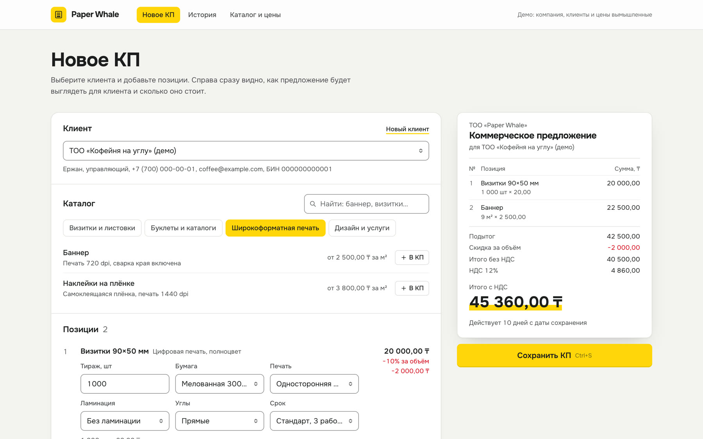

Цены у всех разные
У каждого менеджера своя копия прайса. Кто-то дал старую цену или лишнюю скидку — узнаёте, когда клиент уже оплатил.
Один прайс и одни правила скидок для всех
Настраиваем систему под ваши процессы: от бота записи клиентов до учёта склада и ИИ-ассистента. Две недели работаем без оплаты: вы видите план и первый результат — и только потом решаете, продолжать ли.
3–5 мин на одно КП вместо 30–40 — так стало у нашего клиента, мерч-студии14 дней — для учёта, ИИ-ассистента, сайта компании или приложения. Для ботов и заявок — первый результат за 3 дня до оплаты. Что входит

Кадры из демо-проектов. Компании и данные вымышленные.
Узнаёте свой бизнес?
Не в больших ошибках, а в ежедневной ручной работе, которую можно отдать системе.
У каждого менеджера своя копия прайса. Кто-то дал старую цену или лишнюю скидку — узнаёте, когда клиент уже оплатил.
Один прайс и одни правила скидок для всех
Каждое КП вручную — полчаса и больше. Пока считаете наценки и НДС, клиент получает ответ от конкурента.
КП из каталога и PDF одной кнопкой
Остатки знают только после звонка на склад. Предоплату взяли, а товара нет — приходится извиняться.
Остатки видно до того, как пообещать клиенту
Заявка висит на почте, пока её не заметят. За это время человек уже договорился с теми, кто перезвонил первым.
Заявка сразу в Telegram и в таблицу
Реальный результат
Коммерческий проект. Название клиента скрыто: разрешения на публикацию нет.
Что мы делаем
У учёта, заявок и бота есть видео-демо на вымышленных данных — видно, что вы получите, ещё до заказа.
Каталог, калькулятор КП, склад и заказы в одном месте вместо Excel.
Заявка с сайта или рекламы сама приходит менеджеру и записывается в таблицу или вашу CRM.
Клиенты сами записываются, переносят визит и получают ответы на частые вопросы. Для салона, автосервиса, клиники, барбершопа, курсов.
Подключаем ИИ к тому, что у вас уже есть. Он работает только с вашими данными, а сложное передаёт человеку.
Также делаем WhatsApp-ботов, лендинги, сайты компаний, Telegram Mini App и мобильные приложения — обсудить задачу
Подключаем к тому, что у вас уже есть
Кто мы
Руководитель команды. Каждый проект веду лично
Я в IT больше 5 лет, со мной работают два разработчика. Берёмся за проекты разного уровня сложности: от Telegram-бота за неделю до системы учёта под процессы компании.
Условия
Цену и срок фиксируем в ТЗ до первой оплаты. Цена не меняется, если не меняется ТЗ.
Половина — на старте, вторая — только после сдачи работы.
Показываем промежуточный результат. Две итерации правок уже входят в цену.
Две недели после запуска бесплатно исправляем всё, что всплывёт. Это не пробный период, а гарантия на готовую работу.
После полной оплаты передаём исходный код, все доступы и инструкцию.
После запуска — сервер за 4 000–10 000 ₸ в месяц, напрямую хостингу. У WhatsApp и ИИ добавляется оплата сообщений по факту. Без платы за каждого сотрудника.
Как начать
Объём работы у всех разный: одному нужен бот записи, другому — учёт склада на несколько филиалов. Поэтому вилку цены называем ещё на консультации, до бесплатных 14 дней. Точную цену фиксируем в ТЗ, когда готов план.
Система учёта, ИИ-ассистент, сайт компании, приложение: на консультации называем вилку цены и первые две недели работаем без оплаты. Вы оцениваете нас по делу, а не по обещаниям, и заранее знаете, сколько это примерно будет стоить.
Бот, автоматизация заявок или лендинг делаются за 3–14 дней, поэтому там другое правило: первый рабочий результат показываем за 3 дня, до оплаты.
Обсудить задачуХотим показывать новым клиентам реальные результаты, а не только демо. Поэтому часть проектов берём со скидкой — в обмен на отзыв и разрешение опубликовать кейс.
Размер скидки — на консультации.
Как проходит работа
Вопросы
Система учёта (по-английски ERP) — программа, в которой бизнес ведёт учёт в одном месте: каталог и цены, заказы, склад и остатки, расчёт коммерческих предложений. Вместо разрозненных таблиц Excel у всех сотрудников одни и те же данные и одни правила расчёта. Для малого бизнеса это не громоздкая корпоративная программа, а система под ваши процессы — только те модули, которые вам нужны. Пример такого модуля — калькулятор КП.
Коммерческий кейс здесь пока один, и клиент не дал разрешения публиковать детали — поэтому его название скрыто. Чтобы вам не приходилось верить на слово, мы записали видео-демо основных услуг и покажем их вживую на консультации. А на системы учёта, ИИ и сайты даём 14 дней работы бесплатно: вы оцениваете нас по результату, а не по отзывам. Если готовы стать нашим кейсом и оставить отзыв — сделаем скидку.
Объём работы у всех разный: бот записи для одного салона и учёт склада для компании с филиалами отличаются в разы. Поэтому вилку цены называем ещё на бесплатной консультации, до 14 бесплатных дней, — вы сразу понимаете порядок суммы. Точную цену фиксируем в ТЗ, когда готов план, и дальше она не меняется, если не меняется ТЗ.
Подвоха нет. За две недели вы видите, как мы работаем, а мы — подходит ли нам задача. Если решите не продолжать, план автоматизации остаётся у вас и платить ничего не нужно. 14 дней даём на систему учёта, ИИ-ассистента, сайт компании или приложение. Бот или автоматизация заявок целиком делается быстрее двух недель, поэтому там показываем первый рабочий результат за 3 дня, до оплаты.
Бот записи работает в Telegram: там удобные кнопки, а подключение бесплатное. Клиентов из WhatsApp и Instagram он не теряет: ссылку на запись ставят в шапку профиля и в автоответ, и человек записывается в пару нажатий.
Если нужен бот именно в WhatsApp, сделаем за 2–3 недели. Разработка дороже, чем у Telegram-бота: WhatsApp работает только через официальный API Meta, бизнес проходит проверку, а каждый шаблон сообщения Meta одобряет заранее. Каждый месяц добавляется оплата сообщений: первые 1 000 ответов клиентам бесплатно, дальше и напоминания — примерно 8–10 ₸ за сообщение. Для салона на 300 записей в месяц с двумя напоминаниями это около 5 000–6 000 ₸. Точную вилку назовём на консультации.
Готовый сервис хорош, если ваши процессы в него укладываются. Мы нужны, когда не укладываются или когда надоело платить подписку за каждого сотрудника. Вы платите за разработку один раз, система делает ровно то, что нужно вашему бизнесу, а код и данные принадлежат вам. Каждый месяц остаётся только оплата сервера. Если у вас уже есть amoCRM или Bitrix24, мы их не меняем, а подключаем к ним заявки и ботов.
Бухгалтерия остаётся в 1С, мы её не трогаем. Система учёта закрывает то, в чём 1С неудобна менеджерам: каталог с актуальными ценами, расчёт КП, заказы и остатки, которые видно с телефона. Нужен ли обмен данными с 1С, решаем после того, как посмотрим вашу базу: это зависит от её версии и настроек. Если обмен не нужен или не окупается, честно скажем.
Да, с Kaspi Магазином. Новые заказы сами попадают в учёт и в Telegram, а цены и остатки из учёта уходят на Kaspi. Подключаем через официальный API Kaspi. Сначала только читаем заказы: статусы в вашем кабинете не трогаем, пока вы не проверите, что всё сходится. Готового проекта с Kaspi у нас пока нет, поэтому первый такой проект возьмём по цене кейса. Кнопку Kaspi Pay на ваш сайт не встраиваем: её подключают только по договору с Kaspi. Если клиенты платят вам переводом на Kaspi, так и останется.
Ассистент отвечает только по вашей базе знаний: прайсу, услугам, правилам записи. Если ответа там нет или вопрос сложный, он передаёт диалог менеджеру, а не придумывает. Перед запуском проверяем его на реальных вопросах ваших клиентов, а все диалоги сохраняются — видно, что и кому он ответил.
Да. Ассистент отвечает на том языке, на котором пишет клиент, — на русском или казахском. Перед запуском проверяем ответы на обоих языках на реальных вопросах ваших клиентов.
Подключаем ИИ-модели через официальный платный API. По условиям крупных провайдеров, например Anthropic и OpenAI, данные из API не используются для обучения моделей. Модели передаём только то, что нужно для конкретного ответа: без паролей, номеров карт и лишних личных данных.
Только за сервер, напрямую хостингу, без нашей наценки. Для Telegram-бота или автоматизации заявок достаточно сервера в Казахстане за 4 000–6 000 ₸ в месяц, для системы учёта — 8 000–10 000 ₸. Сервис автоматизации n8n, база данных и Telegram на этом сервере работают бесплатно, отдельных подписок нет. У WhatsApp-бота добавляется оплата сообщений Meta: первые 1 000 ответов клиентам в месяц бесплатно, дальше и напоминания — примерно 8–10 ₸ за сообщение. У ИИ-решений добавляется оплата ИИ-модели по факту: около 1–5 ₸ за ответ, то есть примерно 1 000–5 000 ₸ за тысячу ответов клиентам в месяц. Домен для сайта оплачивается раз в год. Сервер и счета оформляем на вас.
Нет, если не меняется ТЗ. Цена фиксируется в ТЗ до старта. Если по ходу появится новая задача, сначала договариваемся о ней отдельно.
Нет. 20–30 минут, бесплатно и без обязательств. Разберём, где теряется время, назовём вилку цены, покажем демо и подскажем 2–3 улучшения, которые можно сделать самим. После созвона пришлём короткий план автоматизации — он ваш, даже если работать с нами не будете.
Две недели гарантии: бесплатно исправляем всё, что всплывёт. Дальше — по желанию: ежемесячная поддержка с правками, обновлениями и мониторингом.
Код ваш: после полной оплаты передаём исходный код, все доступы и инструкцию. Поддерживать его сможет любой толковый разработчик: делаем на популярных технологиях, с которыми работает большинство разработчиков: Next.js, TypeScript, React Native, Supabase, n8n. Проект не привязан к нам.
Пара строк о задаче — ответим и предложим время для бесплатной консультации. Если автоматизация вам не нужна, так и скажем.
За 20–30 минут консультации вы получите